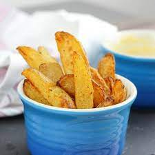

Chunky Chips

Description
This recipe is for amazing chunky oven chips
Ingredients
- 500g Maris Pipers
- Salt
- Paprika
- Garlic Powder
- Olive Oil
- Pre-heat oven to 230°c
- Cut potatoes into chunky chip sizes with the skin on and par boil in salted water for 5 minutes
- Remove from the boil and drain
- Evenly spread the potatoes out on to a baking tray, use multiple if needed
- Coat in seasoning and oil, toss them to ensure even coverage
- Cook in the over for 30 minutes and flip them for the last 15-20 minutes
- Dish them up and enjoy!